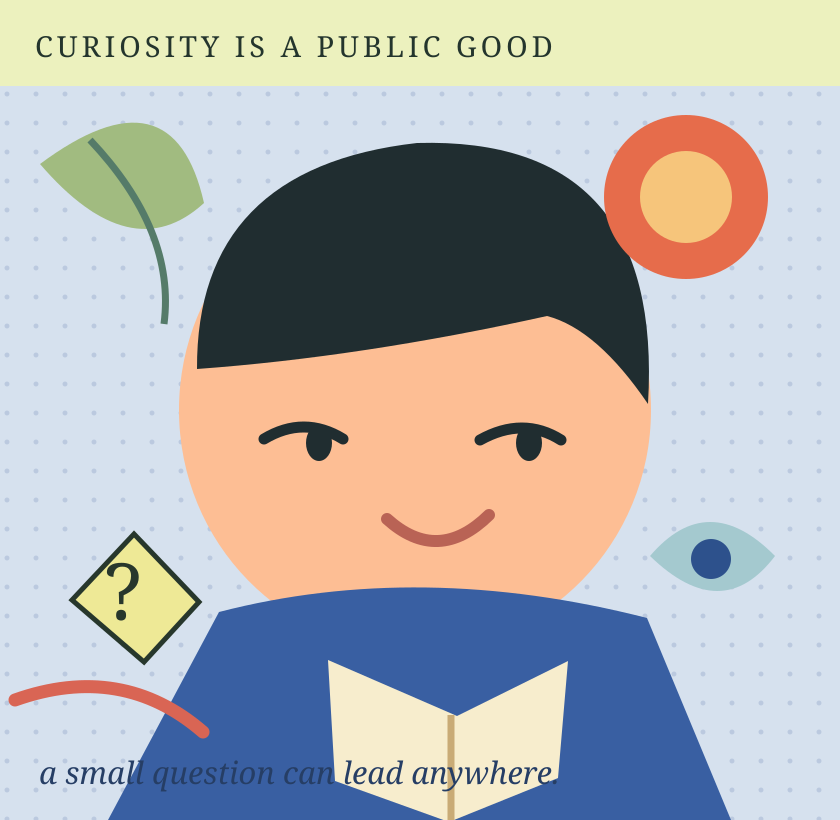

What if we got curious on purpose?
Big questions, tiny experiments and wonderfully ordinary discoveries. A magazine for people who still ask why.
Read the cover story
What would you like to explore?
Three doors into one everyday phenomenon. Choose a perspective; none is a test or medical advice.
The animated form is decorative, not a breathing pace. Movement can be turned off.
Follow your curiosity.
Breathing Under Pressure
What we can learn from the small pause between feeling something and responding.
03 / YOUNG MINDS · 4 MINYour Brain Has 27 Tabs Open
A curious, friendly introduction to attention and what happens when the mind gets busy.
04 / NATURE & ETHICS · FEATURECan eating a fish ever protect other fish?
An invasive lionfish, a documentary, and an unexpectedly difficult moral question.
A small question can lead anywhere.
These previews use the actual GOOD QUESTION stories. For the rest of the issue — food, ethics, nature, culture and our original multilingual experience — visit the existing magazine. No current content or route has been replaced.
Read the current GOOD QUESTION issue ↗Graphic play, memorable covers and one meaningful interactive choice. Serious ideas made exploratory without turning reading into a game.